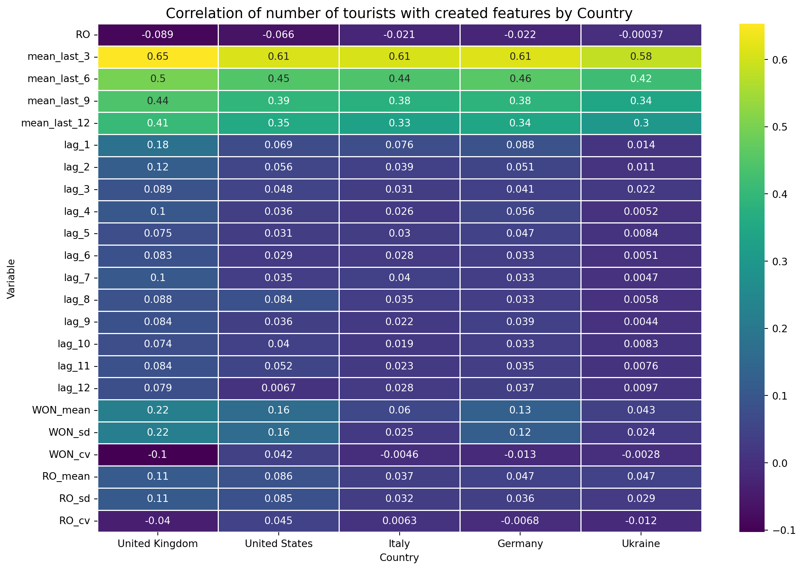

No extensive data preprocessing was performed prior to model development. The dataset originates from an official statistical survey and is already provided in a structured and standardised format, which reduces the need for additional transformations.
Only basic preprocessing steps were applied, including verification of data types and conversion of variables representing dates into a proper datetime format. This step was necessary to enable the creation of additional time-dependent variables.
No standardisation or scaling was applied during initial data preparation; however, explanatory variables were standardized later within the modeling pipeline for regularized regression models.
More advanced preprocessing techniques, such as outlier removal, smoothing, or data transformation, were intentionally avoided in order to preserve the original characteristics of the dataset, including seasonality, regional variation, and effects of external events.
Since the objective of the project is to evaluate imputation methods under realistic conditions, maintaining the original data structure was considered more appropriate than applying extensive preprocessing.
#Checking correlation between features and target variable
Code
import pandas as pdimport globimport os# ścieżka do folderufolder_path =r"synthetic data/synthetic_countries_features"# lista plików excelall_files = glob.glob(os.path.join(folder_path, "*.xlsx"))# wczytanie i połączeniedf_list = [pd.read_excel(file) forfilein all_files]df = pd.concat(df_list, ignore_index=True)print(df.shape)df.head()
(310270, 29)
REGON
RO
WON
KKR
D8R1
OKRES
data
mean_last_3
mean_last_6
mean_last_9
...
lag_9
lag_10
lag_11
lag_12
WON_mean
WON_sd
WON_cv
RO_mean
RO_sd
RO_cv
0
b7640cd2
1
14
826
359.0
201801
2018-01-01
NaN
NaN
NaN
...
NaN
NaN
NaN
NaN
43.802422
107.675958
2.458219
28.84105
78.069148
2.706876
1
abb99b5d
1
10
826
72.0
201801
2018-01-01
NaN
NaN
NaN
...
NaN
NaN
NaN
NaN
12.931093
38.054363
2.942857
28.84105
78.069148
2.706876
2
50dfa51e
1
12
826
121.0
201801
2018-01-01
184.0
NaN
NaN
...
NaN
NaN
NaN
NaN
43.907320
98.972381
2.254120
28.84105
78.069148
2.706876
3
8bb279ae
1
32
826
53.0
201801
2018-01-01
82.0
NaN
NaN
...
NaN
NaN
NaN
NaN
7.262251
19.946758
2.746636
28.84105
78.069148
2.706876
4
41b266d5
1
14
826
9.0
201801
2018-01-01
61.0
NaN
NaN
...
NaN
NaN
NaN
NaN
43.802422
107.675958
2.458219
28.84105
78.069148
2.706876
5 rows × 29 columns
Add country names
Mapping country names from KKR codes into English. For this purpose, a dictionary is created and then used to map the values in the KKR column of the DataFrame to a new country_en column.
The correlation matrix between the features and the target variable (D8R1) is calculated and visualized using a heatmap. The corr() function from the pandas library is used to calculate the correlation coefficients, while the seaborn library is used to create the heatmap visualization.
Code
import numpy as npimport seaborn as snsimport matplotlib.pyplot as plt# Colums to excludeexclude_cols = ['REGON', 'OKRES', 'WON', 'KKR', 'NRW', 'D8R1', 'data', 'country_en']# Lista krajówcountries = df['country_en'].dropna().unique()# Pusta ramka do zbierania korelacjiall_corrs = pd.DataFrame()# Iteracja po krajachfor country in countries: country_df = df[df['country_en'] == country]# Wybierz kolumny numeryczne (bez wykluczonych) numeric_cols = country_df.select_dtypes(include=[np.number]).columns numeric_cols = [col for col in numeric_cols if col notin exclude_cols]# Oblicz korelacje z D8R1 corr_series = country_df[numeric_cols].corrwith(country_df['D8R1']).dropna()# Dodaj do zbiorczej ramki all_corrs[country] = corr_series# Transponujemy, żeby na osi X były kraje, na osi Y zmienneall_corrs = all_corrs.T# Rysujemy heatmapęplt.figure(figsize=(12, 8))sns.heatmap(all_corrs.T, annot=True, cmap='viridis', cbar=True, linewidths=0.5)plt.title('Correlation of number of tourists with created features by Country', fontsize=14)plt.xlabel('Country')plt.ylabel('Variable')plt.tight_layout()plt.show()

The variables most strongly correlated with the dependent variable are the 2-, 6-, 9-, and 12-period moving averages. For some countries, a correlation is also observed between the average values at the municipality level and the corresponding standard deviation within the same municipality
Regularized Linear Regression for Feature Selection
Feature selection was performed using regularized linear regression models to identify the most relevant predictors of tourist numbers while reducing multicollinearity among explanatory variables.
Due to strong correlations between temporal variables (particularly lagged values and moving averages), regularization techniques were applied. Ridge regression was used for coefficient shrinkage and model stabilization, without performing feature selection. The regularization strength was selected using cross-validation.
To identify the most important predictors, Elastic Net regularization was additionally applied. By combining L1 and L2 penalties, this approach enables both coefficient shrinkage and automatic variable selection by shrinking less relevant coefficients to zero.
The analysis was conducted separately for each country using chronologically ordered training and testing datasets. Model performance was evaluated using Root Mean Squared Error (RMSE).
Final variable selection was based on non-zero coefficient values, which identified the most informative predictors of tourist flows. Across all countries, autoregressive variables (lags) and moving averages were consistently the most important predictors, indicating strong temporal dependence in tourist arrivals.
#Ridge Regression for Feature Selection
Code
from sklearn.linear_model import RidgeCV, LassoCV, ElasticNetCVfrom sklearn.preprocessing import StandardScalerfrom sklearn.pipeline import Pipelinefrom sklearn.metrics import mean_squared_error# lista zmiennychfeatures = ['mean_last_3', 'mean_last_6', 'mean_last_9', 'mean_last_12','lag_1', 'lag_2', 'lag_3', 'lag_4', 'lag_5', 'lag_6','lag_7', 'lag_8', 'lag_9', 'lag_10', 'lag_11', 'lag_12','WON_mean', 'WON_sd', 'WON_cv','RO_mean', 'RO_sd', 'RO_cv']target ='D8R1'results = {}# pętla po krajachfor country, data in df.groupby('country_en'): data = data.sort_values('data') # ważne przy szeregach czasowych# drop NA (lagi itd.) data = data.dropna(subset=features + [target])iflen(data) <30:continue# za mało danych X = data[features] y = data[target]# split czasowy (np. 80/20) split =int(len(data) *0.8) X_train, X_test = X.iloc[:split], X.iloc[split:] y_train, y_test = y.iloc[:split], y.iloc[split:]# pipeline: skalowanie + model model = Pipeline([ ('scaler', StandardScaler()), ('reg', RidgeCV(alphas=np.logspace(-3, 3, 50)))# alternatywy:# ('reg', LassoCV(cv=5))# ('reg', ElasticNetCV(l1_ratio=[0.1, 0.5, 0.9])) ]) model.fit(X_train, y_train) preds = model.predict(X_test) rmse = np.sqrt(mean_squared_error(y_test, preds)) results[country] = {'model': model,'rmse': rmse }# wynikiresults_df = pd.DataFrame({ country: {'RMSE': res['rmse']}for country, res in results.items()}).Tprint(results_df.sort_values('RMSE'))
RMSE
Ukraine 0.000002
Germany 0.000004
United Kingdom 0.000007
United States 0.000009
Italy 0.000012
.
##Elastic Net for Feature Selection
Code
import os#selekacja zmiennych przez Elastic Netfrom sklearn.linear_model import ElasticNetCV #regression model with regularization + automatic tuningfrom sklearn.preprocessing import StandardScaler #standardizes featuresfrom sklearn.pipeline import Pipeline #ensures scaling + model happen in correct orderselected_features_per_country = {} #Creating a container for results#Loop over countries#You split your dataset into separate subsets per country# Each country gets its own model and feature selectionfor country, data in df.groupby('country_en'):#Sorting by time data = data.sort_values('data') data = data.dropna(subset=features + [target]) #Removing missing values#Removes rows where: any feature is missing or target (D8R1) is missingiflen(data) <50: #Skip countries with too little datacontinue#X → input variables (lags, rolling means, stats)#y → what you want to predict (D8R1) X = data[features] y = data[target] model = Pipeline([ ('scaler', StandardScaler()), #transforms each feature to:mean = 0, std = 1 ('reg', ElasticNetCV(#ElasticNet combines:#L1 (Lasso) → pushes some coefficients to exactly 0#L2 (Ridge) → shrinks coefficients smoothly#Controlled by: l1_ratio=[0.1, 0.5, 0.9],#0.1 → mostly Ridge#0.9 → mostly Lasso cv=5, #5-fold cross-validation to find best alpha and l1_ratio max_iter=10000 )) ]) model.fit(X, y) coefs = model.named_steps['reg'].coef_ selected = [f for f, c inzip(features, coefs) ifabs(c) >1e-6] selected_features_per_country[country] = selected# podejrzyjfor k, v in selected_features_per_country.items():print(k, ":", v)
results_df = pd.DataFrame([ {‘country_en’: country, ‘feature’: feature} for country, features_list in selected_features_per_country.items() for feature in features_list])